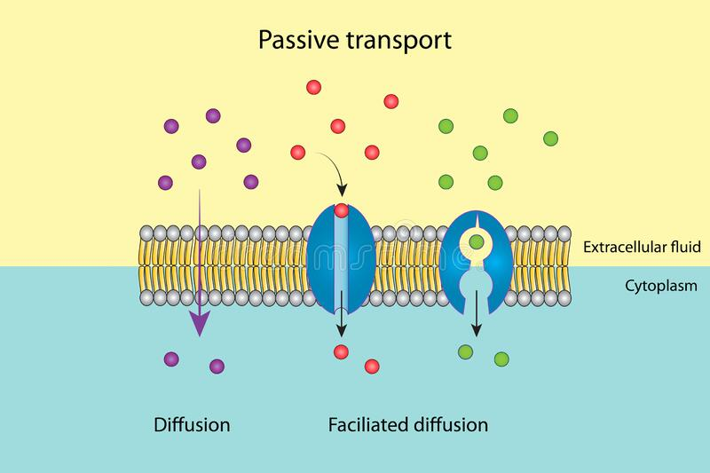

Passive transport, or diffusion is the movement of a substance from an area of high concentration to an area of low concentration. Diffusion happens in liquids and gases because their particles move randomly from place to place. Diffusion is an important process for living things; it is how substances move in and out of cells.
Simple diffusion is defined as the process in which a substance moves through a semipermeable membrane or in a solution without any help from transport proteins.
Facilitated diffusion is diffusion that is helped along by a membrane transport channel. These channels are glycoproteins (proteins with carbohydrates attached) that allow molecules to pass through the membrane. These channels are almost always specific for either a certain molecule or a certain type of molecule (i.e. an ion channel), and so they are tightly linked to certain physiologic functions.